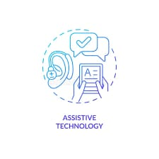
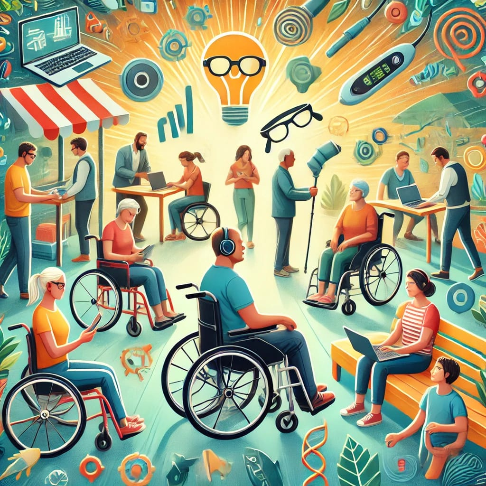

EnableNest
Welcome to our website!
We are dedicated to making everyday life easier for persons with disabilities through innovative assistive technology. Whether it’s helping with mobility, communication, or learning, our goal is to provide tools that promote independence and improve quality of life. Explore our resources and solutions designed to make the world more accessible for everyone.
Introduction to Assistive Technology
Many people don’t know what Assistive Technology is, or even that it exists. Sometimes, they may have seen products like hearing aids or wheelchairs but aren’t aware that these are examples of assistive technology. But hey! Don’t worry, we are here for you! We will brief you on what it is and its significance in the lives of persons with disabilities (PWD).
What is Assistive Technology?
Assistive technology refers to any device or tool that helps individuals with disabilities perform tasks they might find difficult or impossible. These technologies can range from simple items to more advanced tools like speech recognition software and adaptive computer equipment. The goal of assistive technology is to provide greater independence and improve the quality of life for those who need it.
Significance
Assistive technology plays a crucial role in helping people with disabilities live more independent and fulfilling lives. It empowers individuals by providing them with the tools they need to perform daily tasks, whether it’s communicating, moving around, or managing work and education. For example, a person with a visual impairment can use screen readers to access information on a computer, while someone with limited mobility may use a wheelchair or specialized devices to navigate more easily. These technologies not only make everyday activities possible but also allow individuals to participate more fully in society.
Beyond just making tasks easier, assistive technology also helps boost confidence and self-esteem. It opens up opportunities for education, employment, and social interaction that might otherwise be difficult to access. By leveling the playing field, assistive technology ensures that individuals with disabilities can live their lives with greater dignity, freedom, and equality. In essence, it is not just about solving challenges but about providing people with the chance to thrive.
Start Your Journey to Independence Today!
We believe that EnableNest has the power to transform lives. Whether you are seeking solutions for yourself, a loved one, or your community, we are here to help you find the right tools to support independence and improve quality of life. Explore our resources, products, and support services today, and take the first step toward a more accessible and inclusive future. If you have any questions, don't hesitate to reach out — we’re here to guide you every step of the way.